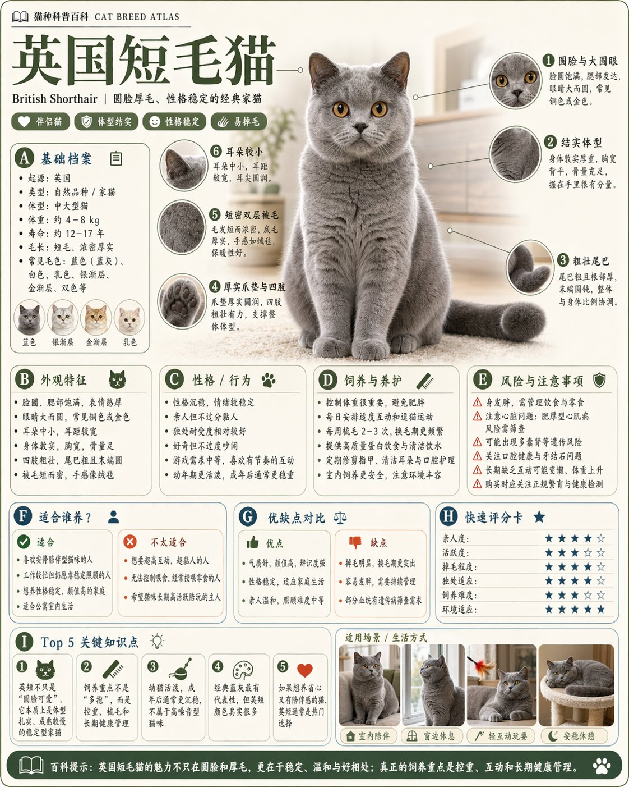

AI海报插画提示词
Science Encyclopedia Infographic
这是一个可参考的 AI 生图提示词案例，适合回到 LOAT 生成器中按主体、风格、比例和用途继续改写。
案例信息
分类：AI海报插画提示词
图片尺寸：1122 × 1402
作者/来源：MrLarus · 来源链接
提示词
请根据【主题】生成一张高质量竖版「科普百科图」。 这张图不是普通海报,也不是单纯插画,而是一张兼具“图鉴感、百科感、信息结构感、收藏感”的模块化科普信息图。整体风格参考高级博物图鉴、现代百科书页、生活方式知识卡和社交媒体高传播信息图的结合。 请让画面包含: - 一个清晰漂亮的主题主视觉 - 若干局部特征放大细节 - 多个圆角模块化信息分区 - 清楚的标题层级与重点标签 - 简洁但丰富的百科内容 - 可视化评分、要点总结或Top 5模块 内容栏目请根据主题自动适配,优先从这些方向中选择并合理组合: 基础档案、分类信息、外观特征、习性/生态、形成机制/结构组成、生长或使用条件、养护或维护建议、风险与注意事项、适合人群或适用场景、优缺点对比、快速评分卡。 视觉要求: 浅色干净背景,柔和配色,轻阴影,精致小图标,圆角信息框,整洁排版,信息密度高但不拥挤,阅读体验好。整体必须像真正可以发布、阅读、收藏、系列化生产的科普百科卡,而不是广告图。 请不要做成普通商业宣传海报。要突出“知识整理 + 模块信息 + 图鉴式展示”的特征。
改写建议
替换主体
保留构图和风格，替换人物、产品、场景或品牌元素。
调整比例
头像可改为 1:1，短视频封面可改为 9:16，横幅可改为 16:9。
减少不确定词
如果结果不稳定，减少过多形容词，优先写清主体、光线和用途。